01／一般土木工程 · B381
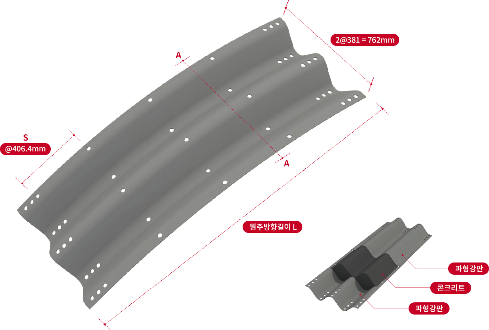
381 × 140 mm
俗稱 380×140 大波形，只有主波形，不具 Wonder Arch 的小型補強波紋。
REXSTEEL 一般波形鋼板主力產品REXSTEEL 以 381×140 為一般波形鋼板主力產品，用於涵洞、生態廊道等土木結構；本公司不將其用作機堡防剝落襯板。
不可替代美軍／NATO 指定防剝落襯板
禁止用於機堡 — REXSTEEL 應用方針
無人機群與精準導引飛彈已改寫現代空戰。具備經認證鋼拱防剝落襯板的強化機堡 (HAS)，是保護戰機最可靠的被動防護。Wonder Arch 於韓國依美國國防部標準製造：610×355 用於第三代戰鬥機機堡 (HAS)，400×200 用於多機與警戒機堡 (HAAS)。Drone swarms and precision-guided missiles have rewritten modern air warfare. A hardened aircraft shelter (HAS) with a certified steel arch spall liner is the proven passive defense for combat aircraft. Wonder Arch is manufactured in Korea to U.S. DoD standards: 610×355 for third-generation fighter shelters (HAS), 400×200 for multi-bay and hardened alert aircraft shelters (HAAS).드론 군집과 정밀유도탄이 현대 공중전을 바꿔 놓았습니다. 인증된 강재 아치 스폴 라이너를 갖춘 강화 격납고(HAS)는 전투기를 지키는 가장 검증된 수동 방호입니다. Wonder Arch는 한국에서 미 국방부 기준으로 제작합니다. 610×355는 3세대 전투기 격납고(HAS), 400×200은 다련·경계 격납고(HAAS)용입니다.
台灣在地生產規劃中。現階段由韓國 REXSTEEL 工廠製造並進口供應，台灣 JV 協助在地諮詢與供貨協調，韓國 REXSTEEL 提供製造與技術支援。Local production in Taiwan is planned. Products are currently manufactured by REXSTEEL Korea and imported; the Taiwan JV coordinates local enquiries and supply, while Korea provides manufacturing and technical support.대만 현지 생산을 계획 중입니다. 현재는 한국 렉스틸 공장에서 제조해 수입 공급하며, 대만 JV는 현지 상담·공급 협의, 한국 렉스틸은 제조·기술 지원을 담당합니다.
近年的區域衝突證明，低成本無人機與精準飛彈足以反覆摧毀停放在開放停機坪上的昂貴戰機。具備經認證鋼拱防剝落襯板的強化機堡，是唯一經實戰驗證的被動防護；Wonder Arch 已獲多國空軍採用。Recent conflicts have shown that low-cost drones and precision missiles can repeatedly destroy expensive combat aircraft on open ramps. A hardened shelter with a certified steel arch spall liner is the only proven passive defense; Wonder Arch is in service with air forces in several countries.최근 분쟁은 저가 드론과 정밀유도탄이 개방 주기장의 고가 전투기를 반복해서 파괴할 수 있음을 보여 주었습니다. 인증된 강재 아치 스폴 라이너를 갖춘 강화 격납고만이 검증된 수동 방호이며, Wonder Arch는 여러 나라 공군에 공급되었습니다.
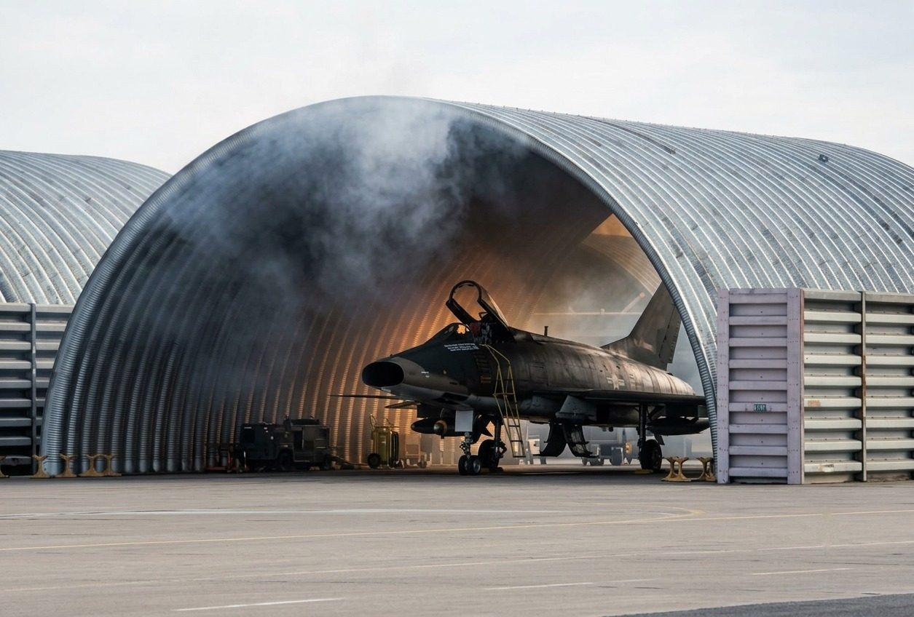
依美國陸軍正式爆震試驗報告 ADP001768 / AD0886769，通過 101.5 psi 超壓認證。全尺寸實測，而非僅模擬。Certified to 101.5 psi overpressure per U.S. Army blast test reports ADP001768 / AD0886769. Full-scale tested, not simulation only.미 육군 공식 폭발시험 보고서 ADP001768 / AD0886769에 따라 101.5 psi 과압 인증. 시뮬레이션이 아닌 실물 시험입니다.
延性波形鋼板依 UFC 3-340-01 第 10.2 節攔截高速混凝土碎片，保護機堡內的飛機與人員。Ductile corrugated steel intercepts high-velocity concrete fragments per UFC 3-340-01 §10.2, protecting aircraft and crew inside.연성 파형강판이 UFC 3-340-01 10.2절에 따라 고속 콘크리트 파편을 차단해 내부 항공기와 인원을 보호합니다.
610×355 mm 雙重波形以傳統斷面一半的鋼材達到相同剛度，降低成本與工期。The 610×355 mm double corrugation reaches equal stiffness with half the steel of conventional profiles, cutting cost and programme.610×355 mm 이중 파형은 기존 단면의 절반 강재로 같은 강성을 내어 비용과 공기를 줄입니다.
韓國產業通商資源部認證（第 1560 號）之電著塗裝，施於 PosMAC 鋼板。不導電、符合 Zone 2 防爆區域、半永久耐久。Electrodeposition coating certified by Korea's Ministry of Trade (No. 1560) over PosMAC steel. Non-conductive, Zone 2 compliant, semi-permanent durability.한국 산업통상자원부 인증(제1560호) 전착도장을 PosMAC 강판에 적용. 비전도성, Zone 2 방폭구역 적합, 반영구 내구성.
自立式拱結構，無桁架、無柱，內部 100% 淨空，便於飛機作業與維修。Self-supporting arch with no trusses or columns: a fully unobstructed interior for aircraft operations and maintenance.자립식 아치라 트러스도 기둥도 없습니다. 항공기 운용과 정비를 위한 완전 개방 공간입니다.
從爆震模擬、結構設計到襯板供應與防爆門整合，單一窗口提供完整機堡方案。防爆門夥伴：SH Door Tech（最高 50 Bar 認證）。From blast simulation and structural design to liner supply and blast-door integration, one contact point for the whole shelter. Blast door partner: SH Door Tech (certified up to 50 Bar).폭발 시뮬레이션과 구조설계부터 라이너 공급과 방폭문 통합까지 단일 창구로 제공합니다. 방폭문 파트너: SH Door Tech (최대 50 Bar 인증).
兩者皆為以鋼筋混凝土拱保護戰機之強化機堡，差異在於任務與配置。Both are reinforced-concrete arch shelters that protect combat aircraft; they differ in mission and layout.둘 다 철근콘크리트 아치로 전투기를 보호하는 강화 격납고이며, 임무와 배치가 다릅니다.
實際配置依各國空軍需求而定。Actual layouts depend on each air force's requirements.실제 배치는 각 공군의 요구에 따라 다릅니다.
B381 一般大波形鋼板、Wonder Arch 雙波形及 400×200 Steel Rolled Arch Liner 是三種不同斷面；僅增加鋼板厚度，不代表符合軍用防剝落襯板規範。

俗稱 380×140 大波形，只有主波形，不具 Wonder Arch 的小型補強波紋。
REXSTEEL 一般波形鋼板主力產品REXSTEEL 以 381×140 為一般波形鋼板主力產品，用於涵洞、生態廊道等土木結構；本公司不將其用作機堡防剝落襯板。
不可替代美軍／NATO 指定防剝落襯板
禁止用於機堡 — REXSTEEL 應用方針
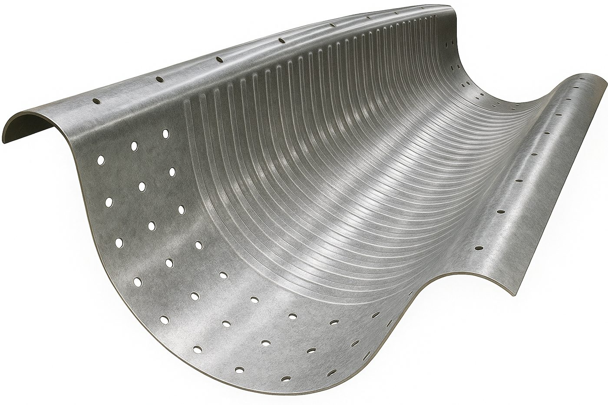
適用美軍／NATO 專案規定之產品
依各專案規範及核准條件適用
Wonder Arch 鋼拱襯板
大波形結合小型補強波紋的雙波形斷面。
TP 15 §8.1：2-ft 正弦波形＝約 610 mm
Double Corrugated Steel Spall Liner
雙波形 · 鋼板厚度 3.2 mm
約 610 mm 主波距＋雙波形＋3.2 mm
專案規範：Section 05 30 00 §1.3 · §2.1.1

適用美軍／NATO 專案規定之產品
依各專案規範及核准條件適用
Steel Rolled Arch Liner · 輥軋鋼拱襯板
不具小型補強波紋的單一深波形襯板。
Steel Rolled Arch Liner
單一深波形 · 5 mm 級鋼板
6 GA 須確認契約對母材厚度的定義
斷面、厚度及接合須符合專案要求
詳細規格於技術協議時提供
| 項目 | 610 × 355 · 雙波形 | 400 × 200 · 單一深波形 |
|---|---|---|
| 產品名稱 | Double-Wave Steel Arch Liner | Steel Rolled Arch Liner |
| 供應厚度 | 3.2 / 4.0 / 4.5 mm | 3 / 4 / 5 / 6 / 7 / 8 mm |
| 適用規範 | 已確認專案規範：雙波形、至少 3.2 mm | 已確認專案要求：5 mm 級，另確認 6 GA 條件 |
| 材質 · 表面 | 依專案規範選定素材、表面處理及電著塗裝 | 依專案規範選定結構鋼及表面處理 |
雙波形是對抑制混凝土剝落碎片飛散具有重大影響的關鍵設計要素。主波形與小型補強波紋影響局部挫屈及變形，須檢核斷面、厚度、接合、錨定與混凝土整體系統；僅增加 B381 厚度，不能取代指定襯板。
已確認專案規範中， Section 05 30 00 — Steel Arch Liner §1.3 要求雙波形，§2.1.1 要求至少 3.2 mm；斷面及接合變更須依核准條件辦理。
HAS 開發與試驗背景說明 2-ft 正弦波形（609.6 mm）；該條文本身未規定 355 mm 波深、小型補強波紋、3.2 mm 厚度或 REXSTEEL 產品認證。
區分 TP 15 §1.5 所述 DESR 6055.09、TP 26 相關設計審查體系、UFC 3-340-01、UFC 3-340-02 與產品規範。實際適用以合約最終規範、圖說及核准條件為準。
參考：TP 15 Rev.5（2026.07）及已檢視專案規範。公開 UFGS 05 30 00 標題為 Steel Decks，為不同文件。上述說明不代表美軍／NATO 通用產品認證，亦非相同條件下的性能倍數比較。B381 不用於機堡為 REXSTEEL 應用方針。
B381 structural plate, double-wave Wonder Arch and 400×200 Steel Rolled Arch Liner are three distinct profiles. Increasing plate thickness alone does not satisfy a military spall-liner specification.
Commonly called the 380×140 large corrugation. It has a main corrugation without Wonder Arch’s small reinforcing flutes.
REXSTEEL’s main civil structural plate productREXSTEEL manufactures 381×140 as its main civil structural plate for culverts, wildlife crossings and similar structures. We do not use this product as a shelter spall liner.
Not a substitute for specified U.S. military / NATO spall liners
Not for aircraft shelters — REXSTEEL application policy
Products subject to U.S. military / NATO project requirements
Subject to each project’s specifications and approvals
Wonder Arch Liner
A double-wave section combining a large corrugation with small reinforcing flutes.
TP 15 §8.1: 2-ft sinusoidal wave = approximately 610 mm
Double Corrugated Steel Spall Liner
Double corrugation · 3.2 mm steel plate
Approx. 610 mm primary pitch + double corrugation + 3.2 mm
Project specification: Section 05 30 00 §1.3 · §2.1.1
Products subject to U.S. military / NATO project requirements
Subject to each project’s specifications and approvals
Steel Rolled Arch Liner
A single deep-corrugation liner without small reinforcing flutes.
Steel Rolled Arch Liner
Single deep corrugation · 5 mm-class plate
For 6 GA, confirm the contract’s base-metal thickness definition
Project-specific section, thickness and connection requirements apply
Detailed specifications available through technical consultation
| Item | 610 × 355 · Double wave | 400 × 200 · Single deep corrugation |
|---|---|---|
| Product name | Double-Wave Steel Arch Liner | Steel Rolled Arch Liner |
| Available thicknesses | 3.2 / 4.0 / 4.5 mm | 3 / 4 / 5 / 6 / 7 / 8 mm |
| Applicable specification | Verified project specification: double-fluted, minimum 3.2 mm | Verified project requirements: 5 mm-class; confirm 6 GA conditions |
| Material · Surface protection | Material, pretreatment and e-coating to project specifications | Structural steel and surface treatment to project specifications |
Double corrugation is a key design feature with a major influence on limiting concrete spall.The main corrugation and reinforcing flutes affect local buckling and deformation. The complete system—section, thickness, connections, anchorage and concrete—must be assessed. Increasing B381 thickness alone does not make it a substitute for a specified liner.
In the reviewed project specification, Section 05 30 00 — Steel Arch Liner §1.3 requires a double-fluted section and §2.1.1 a minimum 3.2 mm thickness. Changes to sections and connections are subject to approval.
The HAS development and testing history describes a 2-ft sinusoidal wave (609.6 mm). This passage alone does not specify a 355 mm depth, small reinforcing flutes, 3.2 mm thickness or REXSTEEL product certification.
The design and review framework involving DESR 6055.09 and TP 26 referenced in TP 15 §1.5, UFC 3-340-01 and UFC 3-340-02, and product specifications are treated separately. Actual application follows the final contract specifications, drawings and approval conditions.
References: TP 15 Rev.5 (July 2026) and the reviewed project specification. Public UFGS 05 30 00 is titled Steel Decksand is a separate document. These descriptions are not universal U.S. military / NATO product certification or a quantified same-condition comparison. The ban on B381 for shelters is REXSTEEL’s application policy.
B381 일반 대골형, 원더아치 이중파형, 400×200 Steel Rolled Arch Liner. 서로 다른 세 단면을 구분해야 합니다. 강판 두께를 늘리는 것만으로 군용 스폴라이너 시방을 충족하는 것은 아닙니다.
통칭 380×140 대골형. 큰 파형으로 구성되며, 원더아치의 작은 보강 파형이 없는 단면입니다.
렉스틸의 일반 파형강판 주력 제품렉스틸은 381×140 대골형을 일반 파형강판의 주력으로 생산합니다. 통수로·생태통로 등 토목 구조물에 사용하며, 이 제품을 격납고용 스폴라이너로 사용하지 않습니다.
미군·NATO용 지정 스폴라이너의 대체 규격 아님
격납고용 사용 금지 — 렉스틸 적용 방침
미군·NATO 규정 적용 제품
프로젝트별 시방·승인 조건 적용
Wonder Arch Liner · 원더아치 라이너
큰 파형에 작은 보강 파형을 더한 이중파형 단면입니다.
TP 15 §8.1: 2-ft 사인파형 = 약 610 mm
Double Corrugated Steel Spall Liner
이중파형 · 강판 두께 3.2 mm
약 610 mm 주파형 + 이중파형 + 3.2 mm
Section 05 30 00 §1.3 · §2.1.1 시방 참조
미군·NATO 규정 적용 제품
프로젝트별 시방·승인 조건 적용
Steel Rolled Arch Liner · 스틸 롤드 아치 라이너
작은 보강 파형이 없는 단일 심파형 라이너입니다.
Steel Rolled Arch Liner
단일 심파형 · 5 mm급 강판
6 GA 적용 시 계약상 모재 두께 기준 확인
단면·두께·접합의 프로젝트 요구 적용
세부 사양은 기술 협의 시 제공
| 구분 | 610 × 355 · 이중파형 | 400 × 200 · 단일 심파형 |
|---|---|---|
| 제품명 | Double-Wave Steel Arch Liner | Steel Rolled Arch Liner |
| 공급 두께 | 3.2 / 4.0 / 4.5 mm | 3 / 4 / 5 / 6 / 7 / 8 mm |
| 적용 시방 | 확인된 프로젝트 시방: 이중파형 · 최소 3.2 mm | 확인된 프로젝트 사양: 5 mm급 · 6 GA 조건 확인 |
| 소재 · 표면 | 프로젝트 시방에 따른 소재 · 표면처리 · 전착도장 | 프로젝트 시방에 따른 구조용 강판 · 표면처리 |
이중파형은 콘크리트 파편의 비산 방지에 중대한 영향을 미치는 핵심 설계 요소입니다.큰 파형과 작은 보강 파형이 국부 좌굴·변형 거동에 영향을 줍니다. 단면·두께·접합·정착과 콘크리트를 포함한 전체 시스템을 검토해야 하며, B381의 두께를 늘리는 것만으로 지정 라이너를 대체할 수 없습니다.
확인된 프로젝트의 Section 05 30 00 — Steel Arch Liner §1.3은 이중파형을, §2.1.1은 최소 3.2 mm를 요구합니다. 단면·접합 변경은 승인 조건을 따릅니다.
HAS의 개발·시험 배경에서 2-ft 사인파형(609.6 mm)을 설명합니다. 이 조항 자체가 깊이 355 mm·작은 보강 파형·3.2 mm 또는 렉스틸 제품 인증을 명시하는 것은 아닙니다.
TP 15 §1.5의 DESR 6055.09·TP 26 관련 설계·검토 체계와 UFC 3-340-01·UFC 3-340-02, 제품 시방을 구분합니다. 실제 적용은 해당 계약의 최종 시방·도면과 승인 조건으로 정합니다.
참조: TP 15 Rev.5(2026.07) 및 보유 프로젝트 시방. 공개 UFGS 05 30 00은 Steel Decks로 별도 문서입니다. 위 설명은 미군·NATO 전체의 공통 제품 인증이나 동일 조건 비교 성능 배수를 뜻하지 않습니다. B381의 격납고용 사용 금지는 렉스틸의 제품 적용 방침입니다.
Explore surface preparation, coating, quality checks and site assembly in photographs.


표면처리·도장·품질 확인과 현장 조립 과정을 사진으로 살펴보세요.
| 製造商Manufacturer제조사 | REXSTEEL Inc. — 韓國Republic of Korea대한민국 |
|---|---|
| 分類Classification분류 | UFGS 05 30 00 — Steel Arch Liner |
| 爆震認證Blast certification폭발 인증 | 7-Bar (101.5 psi ≈ 700 kPa) |
| 試驗報告Test reports시험 보고서 | U.S. Army ADP001768 / AD0886769 |
| 斷面Profile단면 | 610 × 355 mm |
| 螺栓Bolts볼트 | M13 (φ12.7 mm) 高強度high-strength고장력 |
| 鋼材Steel강재 | PosMAC (Mg-Al-Zn) · ASTM A653 eq. |
| 塗裝Coating도장 | NET 認證電著塗裝 · Zone 2NET-certified electrodeposition · Zone 2NET 인증 전착도장 · Zone 2 |
| 耐蝕性Corrosion내식성 | 一般鍍鋅鋼之 5–10 倍5–10× standard galvanized steel일반 아연도금강의 5–10배 |
| 斷面Profile단면 | 400 × 200 mm 深波形deep corrugated심파형 |
|---|---|
| 板厚Thickness두께 | 3 · 4 · 5 · 6 · 7 · 8 mm |
| 材料Material재료 | 結構用鋼板（可用高強度鋼種）Structural steel plate (high-strength grades available)구조용 강판 (고강도강 가능) |
| 表面Surface표면 | 熱浸鍍鋅或預塗鋼捲，依規範Hot-dip galvanized or pre-coated coil, to specification용융아연도금 또는 프리코트 코일, 시방에 따름 |
| 錨定Anchorage정착 | 剪力釘（植釘槍焊接，選配）Headed studs (stud gun welding, option)헤드스터드 (스터드 건 용접, 옵션) |
| 適用Application적용 | 多機 · 頂棚式 · 警戒機堡 (HAAS)Multi-bay · canopy-type · alert shelters (HAAS)다련 · 캐노피 · 경계 격납고(HAAS) |

嶺南大學、慶星大學研究團隊以 LS-DYNA 分析外部爆炸及侵徹後爆炸的結構反應，展示實際分析圖與主要數值。

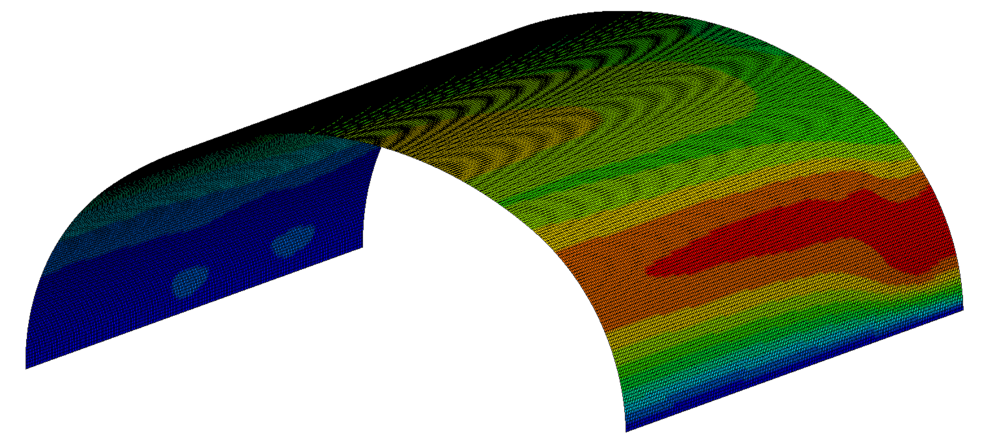
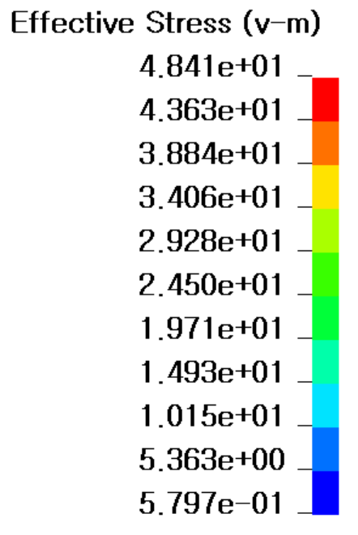

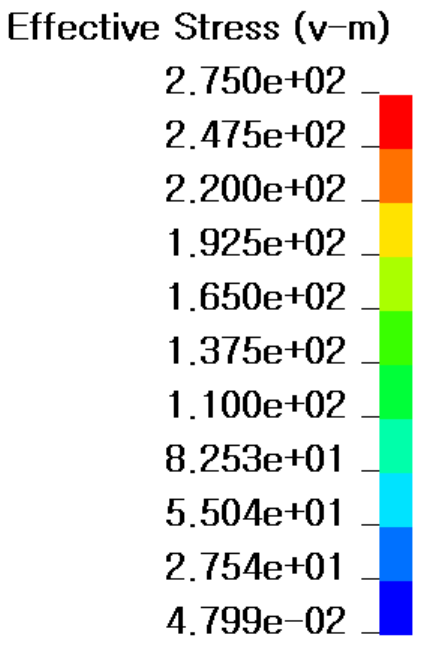

外部爆炸分析 — 報告結論為：在所採分析條件及評估方法範圍內確認結構安全性。
侵徹後爆炸分析 — 多層防護結構發生局部降伏及塑性變形；報告指出分析結束前整體拱形維持，且未觀察到明顯內部碎片飛散。
此為數值分析，並非實體爆炸試驗認證。上述觀察不足以判定碎片速度、深度及錐角的定量標準符合性，也未直接驗證新 C-130 大型 HAS 或 4.5 mm 擴大設計，須另行分析。
Structural responses to external blast and post-penetration detonation, studied with LS-DYNA by the Yeungnam and Kyungsung university team. Explore actual analysis images alongside key results.
These are edited promotional clips. The results below refer to the submitted report’s specific analysis conditions and evaluation times.
External blast analysis — The report concludes structural safety within its analysis conditions and evaluation method.
Post-penetration blast analysis — Local yielding and plastic deformation occurred in the multilayer system. The report states that overall arch geometry was maintained until the analysis ended and no distinct inward fragment scattering was observed.
Numerical analysis, not full-scale blast-test certification. These observations alone do not establish quantitative spall-velocity, depth or cone-angle compliance. They do not directly validate the new C-130 large-HAS concept or 4.5 mm extensions; those require separate analysis.
영남대학교·경성대학교 연구팀이 LS-DYNA로 검토한 외부 폭발 및 관입 후 폭발의 구조 응답입니다. 실제 해석 결과 이미지와 주요 수치를 함께 확인하세요.
영상은 홍보용 편집본입니다. 아래 주요 수치는 제출 보고서의 해당 해석 조건과 평가 시점 기준입니다.
외부 폭발 해석 — 보고서는 적용한 해석 조건과 평가 방법의 범위에서 구조적 안전성을 확인했다고 결론 내렸습니다.
관입 후 폭발 해석 — 다층 방호구조에서 국부적인 항복과 소성변형은 발생했으나, 검토 종료 시점까지 전체 아치 형상을 유지하고 뚜렷한 내부 파편 비산은 관찰되지 않았다고 보고했습니다.
수치해석 결과이며 실물 폭발시험 인증과 구분합니다. 박락 파편속도·깊이·원추각의 정량 기준 충족을 위 관찰만으로 확정하지 않습니다. 새 C-130 대형 HAS나 4.5mm 확장 설계를 직접 검증한 결과가 아니며, 확대 적용은 별도 해석이 필요합니다.
依專案階段與採購方式選擇。兩種襯板適用相同方案結構。Matched to your project stage and procurement route. The same structure applies to both liners.프로젝트 단계와 조달 방식에 맞춰 선택합니다. 두 라이너 모두 같은 구조입니다.
C-Full（另行報價）：可委託韓國設計公司網絡完成機堡完整細部設計。設計文件之製作、簽證與許可責任，由業主或承包商指定之登錄工程師承擔；本公司提供襯板圖面與技術支援。C-Full (separate option): complete detailed shelter design with our network of Korean design firms. Preparation and sealing of design documents and permit responsibility rest with the Engineer of Record appointed by the Employer or Contractor; we provide liner drawings and technical support.C-Full(별도 견적): 한국 설계사 네트워크를 통한 격납고 상세설계 일괄 수행. 설계도서 작성·날인과 인허가 책임은 발주처 또는 시공사가 지정한 책임기술자에게 있으며, 당사는 라이너 도면과 기술 지원을 제공합니다.
與 SH DOOR TECH 共同檢討門洞、門框、軌道、驅動系統及襯板與混凝土施工順序；門型及防護規格依專案要求決定。
查看 SH DOOR TECH 簡介 ↗門體結構、桁架、軌道、門框 · 現場組裝及吊裝
依契約範圍提供滾輪、驅動部、控制盤及人員出入門
製作圖、材料、焊接及檢驗程序 · 襯板介面協調
製造檢查 · 安裝 · 試運轉 · 操作人員訓練
With SH DOOR TECH, review openings, frames, rails, drives and the liner / concrete construction sequence together. Door type and protection requirements are set for each project.
View SH DOOR TECH brochure ↗Door structure, trusses, rails and frames · Site assembly and lifting
Rollers, drives, controls and personnel doors within the agreed scope
Shop drawings, materials, welding and inspection procedures · Liner interface coordination
Fabrication inspection · Installation · Commissioning · Operator training
SH DOOR TECH와 문 개구부·문틀·레일·구동부, 라이너와 콘크리트의 시공 순서를 함께 검토합니다. 문 형식과 방호 사양은 프로젝트 요구조건에 맞춰 정합니다.
SH DOOR TECH 브로셔 보기 ↗문 구조체·트러스·레일·문틀과 현장 조립·인양
롤러·구동부·제어반과 인원 출입문 등 계약 범위
제작도·재료·용접·검사 절차와 라이너 접합부 조율
제작 검사·설치·시운전·운전자 교육 지원
區分鋼構機棚與混凝土覆蓋 HAS。Wonder Arch 610×355 襯板依專案檢討 3.2 / 4.0 / 4.5 mm 厚度選項。
主鋼構支撐大跨距空間，搭配內襯板、礦棉、外側檁條與外部裝甲板，以因應防護要求。
寬 50 m · 規劃門洞 44×14 m圖片集中的空間規劃範例；相較 C-130J 外形，門洞名目餘裕左右各約 1.80 m、上方約 2.16 m。門框、設備及操作餘裕須另行詳細檢討。
整合規劃 Wonder Arch 襯板及混凝土覆蓋，分別檢核澆置中的臨時支撐與完成後的混凝土結構。
參考形式：約 21.6 m、25.0 m此為公開 TP 15 §8.1 的既有 HAS 寬度，非本公司 4.5 mm 產品允許最大跨距；HAAS 斷面及厚度亦須依專案規範另訂。
以 C-130J 翼展 40.41 m、高度 11.84 m 為基礎，自出入口及內部有效空間開始規劃的獨立擴大設計。
配合大型化的支撐與覆蓋設計不可沿用相同厚度及支撐點數直接放大 22 m 級 HAS；4.5 mm 適用範圍、混凝土厚度、基礎及門體須經整體結構與防護驗證決定。
HAS 為航空器防護，HAAS 考量戒備出擊待命；不能僅依縮寫決定襯板，須按任務、幾何、載重及核准規範選定。
Steel-framed hangars and concrete-covered HAS are distinct systems. Wonder Arch 610×355 liners are evaluated project by project in 3.2 / 4.0 / 4.5 mm thickness options.
The primary steel frame supports the large clear space. An inner liner, mineral wool, outer purlins and exterior armour plates are configured for the required protection.
50 m width · Planned door opening 44×14 mA gallery space-planning example. Against C-130J overall dimensions, nominal door clearances are about 1.80 m per side and 2.16 m above. Door frames, equipment and operational margins require separate detailed review.
Plan the Wonder Arch liner and concrete cover together. Check temporary support during pouring separately from the completed concrete structure.
Reference types: approx. 21.6 m and 25.0 mExisting HAS widths in public TP 15 §8.1, not allowable maximum spans of our 4.5 mm product. HAAS sections and thicknesses also follow their own project specifications.
A separate enlarged design, starting with the entrance and usable interior based on the C-130J’s 40.41 m wingspan and 11.84 m height.
Support and cover designed for the larger scaleA 22 m-class HAS cannot simply be scaled up with the same thickness and support count. Feasible 4.5 mm applications, concrete thickness, foundations and doors require whole-system structural and protection verification.
HAS provides aircraft protection; HAAS addresses protected alert readiness. The abbreviation alone does not determine the liner: mission, geometry, loads and approved specifications govern selection.
철골 격납고와 콘크리트 피복 HAS를 구분합니다. 원더아치 610×355 라이너는 3.2 / 4.0 / 4.5 mm 옵션에서 프로젝트별로 검토합니다.
주 철골이 대공간을 지지하고, 내부 라이너·미네랄울·외측 퍼린·외부 장갑판으로 요구 방호 조건에 대응하는 방식입니다.
폭 50m · 문 개구 44×14m갤러리의 공간계획 예시입니다. C-130J 외형과 비교한 명목 여유는 문 좌우 각각 약 1.80m, 상부 약 2.16m입니다. 문틀·설비·운용 여유를 포함한 상세 검토는 별도입니다.
원더아치 라이너와 콘크리트 피복을 함께 계획합니다. 타설 중 임시 지지와 완성 후 콘크리트 구조를 각각 검토합니다.
약 21.6m · 25.0m 형식 참고공개 TP 15 §8.1의 기존 HAS 폭입니다. 당사 4.5mm 제품의 허용 최대 경간을 뜻하지 않습니다. HAAS의 단면·두께도 해당 시방에 따라 별도로 정합니다.
C-130J의 날개폭 40.41m·높이 11.84m를 바탕으로 출입구와 내부 유효 공간부터 계획하는 별도 확장 설계입니다.
대형화에 맞춘 지지·피복 설계22m급 HAS를 같은 두께와 지지점 수로 단순 확대하지 않습니다. 4.5mm 적용 가능 범위, 콘크리트 두께, 기초와 문은 전체 구조·방호 검증으로 결정합니다.
HAS는 항공기 보호, HAAS는 경계·출격 대기를 고려한 강화 격납고를 뜻합니다. 라이너는 약어만으로 결정하지 않으며 임무·형상·하중과 승인된 시방에 따라 선정합니다.

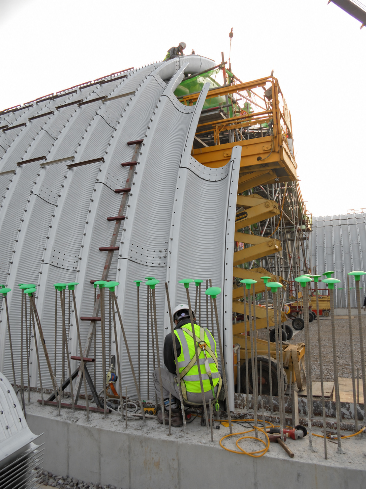


寬 50 m、長 66 m、最高 23.5 m、規劃門洞 44×14 m。為空間及構成檢討的 3D 模型，非已確定鋼構、門、接合或防護性能的設計。
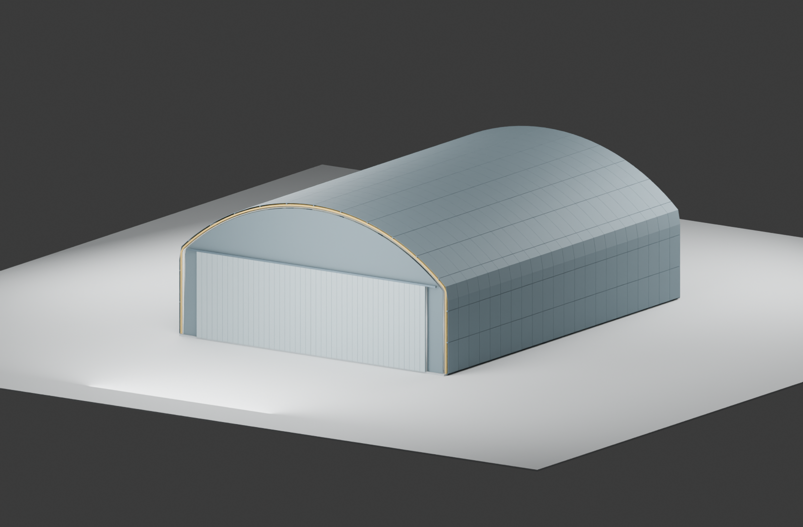
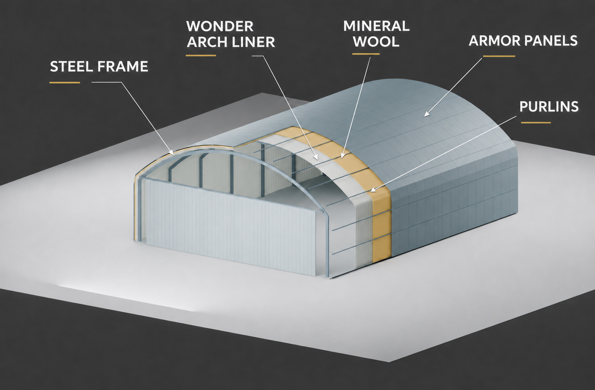
以混凝土拱及內部 Wonder Arch 襯板構成的大型 HAS 空間規劃；飛機為參考 C-130 級外形尺寸的簡化模型，門體為開啟狀態。非實際工程，亦非已核准結構或防護設計。
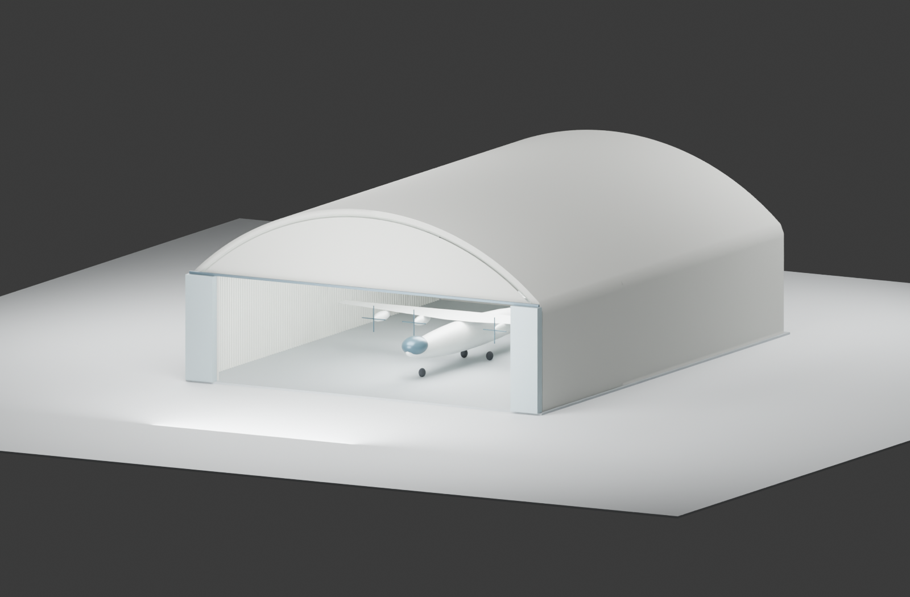


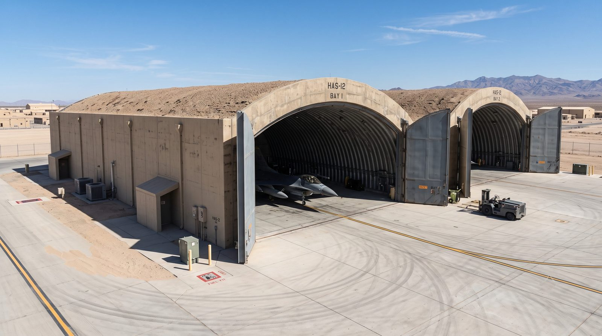

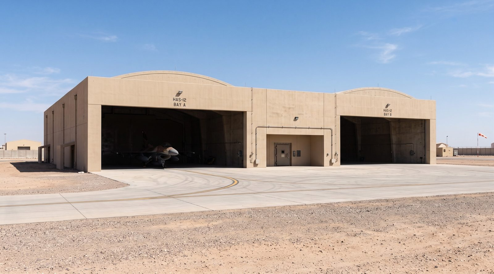
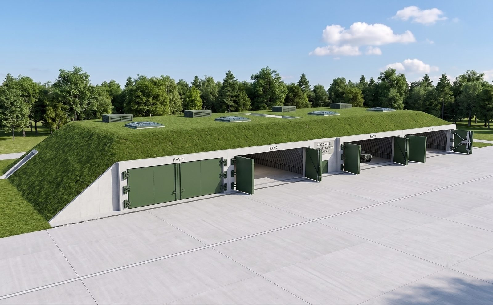


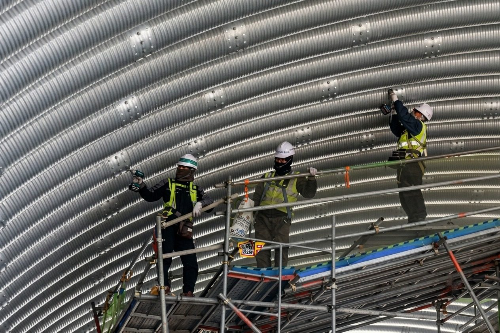
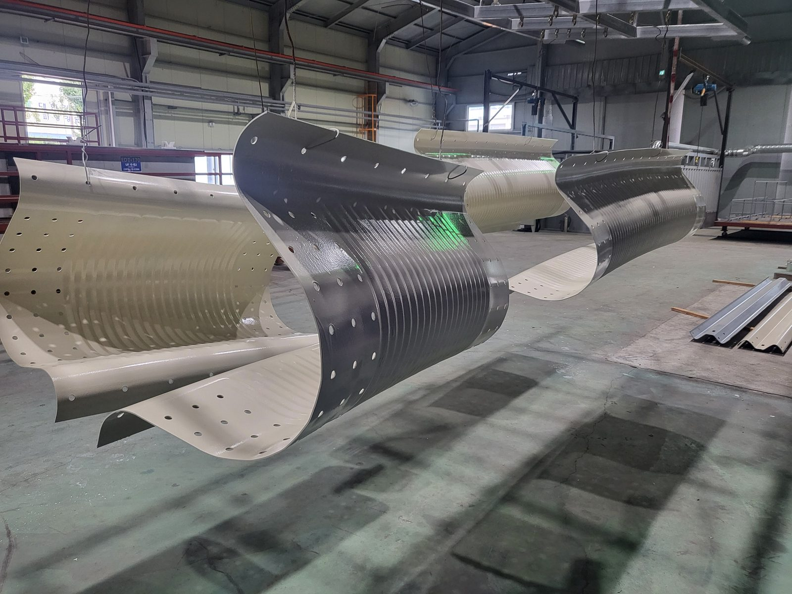

50 m wide · 66 m long · 23.5 m maximum height · Planned door opening 44×14 m. A 3D space and system study, not a finalized steel, door, connection or protection design.
A large-HAS space study with a concrete arch and inner Wonder Arch liner. The aircraft is a simplified C-130-class dimensional reference and the doors are shown open. This is neither a built project nor a structurally or protection-approved design.
폭 50m · 길이 66m · 최고 높이 23.5m · 계획 문 개구 44×14m. 철골·문·접합·방호성능을 확정한 설계가 아닌 공간·구성 검토용 3D 모델입니다.
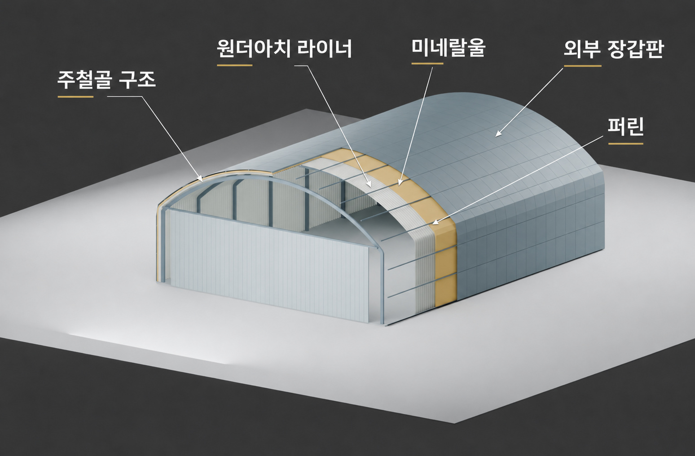
콘크리트 아치와 내부 원더아치 라이너로 구성하는 대형 HAS의 공간계획입니다. 기체는 C-130급 외형 치수를 참고한 단순 모형이며, 문은 열린 상태를 표현했습니다. 실제 시공 사례나 구조·방호 승인을 받은 설계가 아닙니다.
完整型錄、FEM 分析與全系列產品資料，請參閱 REXSTEEL 官方網站；NDA 文件請透過聯絡頁申請。Full catalogue, FEM analysis and the complete product range are on the REXSTEEL official site; NDA documents are requested through the contact page.전체 카탈로그, FEM 해석, 전 제품 자료는 REXSTEEL 공식 사이트에 있으며, NDA 문서는 연락처 페이지로 요청하세요.
台灣地區之機堡 (HAS) 洽詢，請與下列任一窗口聯繫。技術文件依 NDA 簽署後由 REXSTEEL Inc. 直接提供；襯板由 REXSTEEL 韓國工廠製造。For shelter (HAS) enquiries from Taiwan, contact either office below. Technical documents are provided directly by REXSTEEL Inc. after NDA execution. Liners are manufactured at REXSTEEL's plant in Korea.대만 지역 격납고(HAS) 문의는 아래 어느 쪽으로든 연락 주십시오. 기술문서는 NDA 체결 후 REXSTEEL Inc.가 직접 제공하며, 라이너는 REXSTEEL 한국 공장에서 제조합니다.

來信即可取得 NDA 技術資料包與供應範圍文件。Write to us for the NDA technical package and scope-of-supply document.메일 주시면 NDA 기술자료와 공급범위 문서를 보내 드립니다.
台灣窗口統一彙整需求，由韓國 REXSTEEL 協調鋼拱襯板與整體設計支援，並與 SH DOOR TECH 配合防爆門供應。實際責任分工與交付項目於專案階段確認。Taiwan coordinates requirements; REXSTEEL Korea supports liner supply and overall engineering, with SH DOOR TECH for blast doors. Responsibilities and deliverables are agreed per project.대만이 요구조건을 취합하고 한국 렉스틸이 라이너·전체 설계를 지원하며 SH DOOR TECH와 방폭문 공급을 협의합니다. 책임과 성과품은 프로젝트별로 확정합니다.
斷面、配置、接合、錨定與供貨明細。Profiles, layouts, joints, anchorage and supply schedules.단면·배치·접합·정착·공급명세.
配合淨開口、門型、操作方式及專案防護需求。Coordinate clear opening, door type, operation and protection requirements.유효개구부·문형식·작동방식·방호 요구조건 협의.
協調結構介面、圖說、計算與施工技術；機敏資料依 NDA 提供。Coordinate interfaces, drawings, calculations and installation; sensitive documents under NDA.구조 인터페이스·도면·계산·시공 협의, 중요자료는 NDA 후 제공.